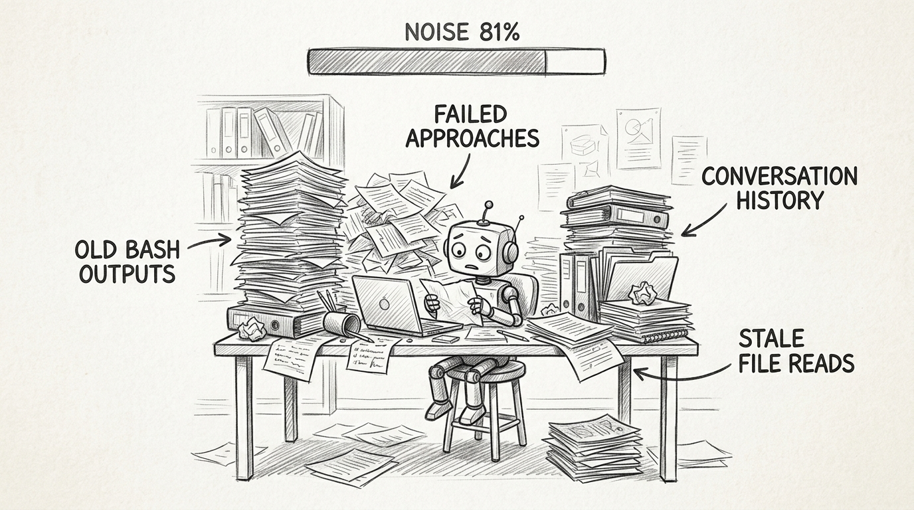
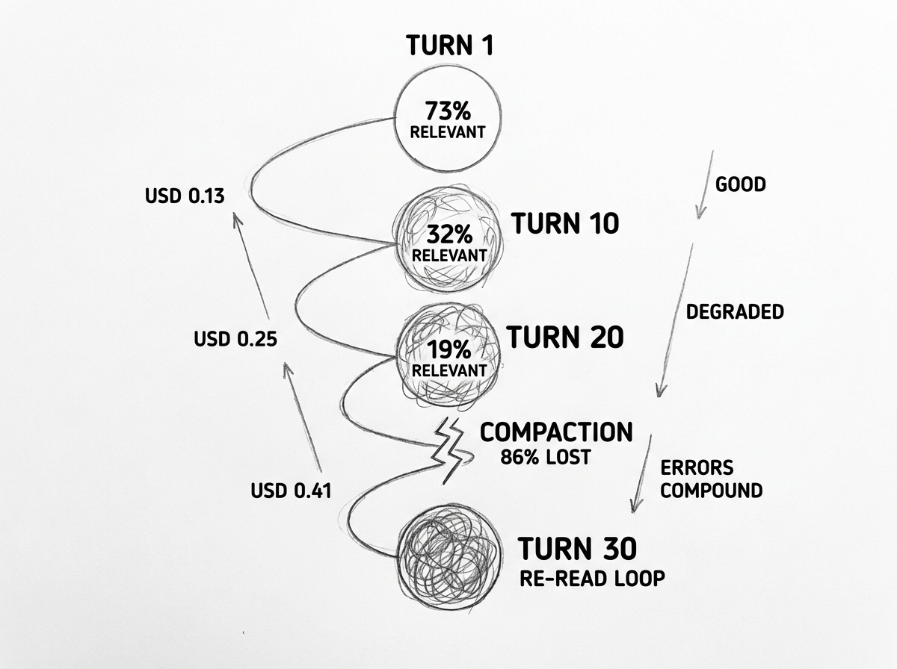
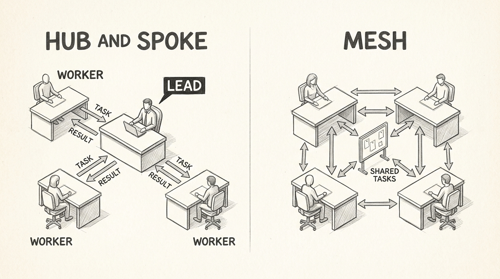
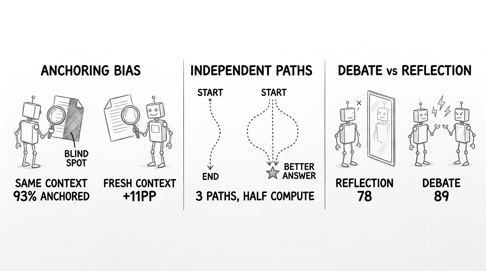
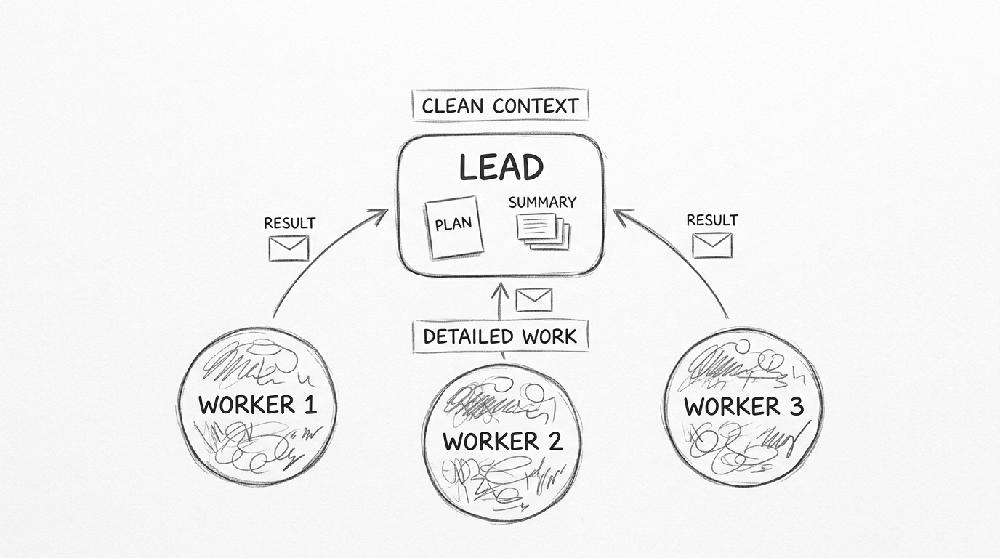

Claude Code's Three Agent Patterns: Solo, Subagents, and Teams
Claude Code's Three Agent Patterns: Solo, Subagents, and Teams
Forty-five minutes into a deep research session. The agent has crawled 30 web pages, read a dozen local files, and generated four interim reports. Now it asks a question you answered at minute ten. The context window is 70% full. 81% of what is in there is noise from completed subtasks that will never be revisited.
This happens in every long session — coding, research, analysis, content generation. Claude Code is a general-purpose agent, not just a code editor, and context pollution hits every workflow equally. The longer the session, the worse the signal-to-noise ratio. Research across 18 frontier models confirms it: every model degrades measurably as context grows, at every length increment.
Claude Code offers three patterns to manage this: stay solo, auto-delegate to subagents, or orchestrate a full team. Each has a distinct cost profile, quality curve, and set of tasks it handles best. This is a practical guide to when and how to use each — with the real numbers.

flowchart TD
H([" Context Decay "])
style H fill:#455a64,color:#fff,stroke:#90a4ae,stroke-width:3px,font-weight:bold,font-size:18px
A single-agent session works like a single desk. Every document stays on it: web search results, file contents, bash outputs, conversation history, debugging transcripts. Nothing gets removed until compaction fires at ~95% capacity. Compaction retains only 14-20% of original content, losing variable names, API signatures, and exact error messages first.
The degradation is measurable:
| Turn | Cumulative Context | Relevant to Task | Relevance Ratio |
|---|---|---|---|
| 5 | ~110K tokens | ~80K | 73% |
| 10 | ~190K | ~60K | 32% |
| 15 | ~245K | ~73K | 30% |
| 20 | ~320K | ~60K | 19% |
LLMs also attend strongly to tokens at the beginning and end of context, but poorly to the middle (Liu et al., TACL 2024). Accuracy drops 30-55 percentage points for middle-positioned information. After about 35 minutes, all agents' success rates decline. Doubling task duration quadruples failure rates. One community member described long sessions as "hiring a brilliant contractor who forgets who you are every single morning."
flowchart TD
H([" The Spiral "])
style H fill:#455a64,color:#fff,stroke:#90a4ae,stroke-width:3px,font-weight:bold,font-size:18px
Context decay is not linear. It compounds — in both cost and quality.
Every turn resends the full conversation history. With Opus 4.6 at USD 5.00 per million input tokens (USD 0.50 cached), the per-turn cost accelerates as context grows:
| Turn | Context Size | Cost per Turn | Cumulative Cost |
|---|---|---|---|
| 5 | ~120K | USD 0.13 | USD 0.72 |
| 10 | ~200K | USD 0.17 | USD 1.54 |
| 20 | ~360K | USD 0.25 | USD 3.75 |
| 30 | ~520K | USD 0.33 | USD 6.70 |
| 40 | ~680K | USD 0.41 | USD 10.40 |
Turn 40 costs 3x what turn 5 costs, for the same amount of new work. This is the cumulative retransmission tax — every token you have ever generated gets resent every turn.

The cost problem feeds the quality problem. As context fills with noise, the agent makes more errors. More errors mean more debugging turns. More debugging turns consume more context. Worse context produces worse output. This is a positive feedback loop.
When compaction fires, it accelerates the spiral. The agent loses file contents it needs, then searches for them again — a Reddit audit of 132 sessions found 71% of file reads were re-reads of files already opened. This refills the context window, which triggers another compaction, which loses more files, which triggers more re-reads. The loop can be catastrophic: one documented session hit 211 compactions with zero forward progress. Another consumed 695 million tokens overnight in an infinite retry loop. These are not edge cases. They are the predictable endpoint of a context window that was never designed to be a long-term memory system.
After compaction, the agent receives a system message to continue without asking the user questions. Multiple GitHub issues document the result — the agent charges forward on incomplete understanding rather than confirming what it lost. Combine lost context with instructions to not ask questions, and you get an agent that confidently does the wrong thing.
Under Claude MAX plans, the damage compounds further. A 30-day usage audit found cache reads consumed 99.93% of total quota. A single message at turn 50 consumes 10-30x the quota of a fresh message. Users on the USD 200 MAX plan report burning through daily limits in hours during compaction-heavy sessions.
flowchart TD
H([" Three Patterns "])
style H fill:#455a64,color:#fff,stroke:#90a4ae,stroke-width:3px,font-weight:bold,font-size:18px
Claude Code addresses context decay with three distinct patterns.
Single agent keeps everything in one context window. Zero coordination overhead. Works well for focused tasks under 10-15 turns where deep sequential reasoning matters — debugging a race condition, tracing data flow through multiple layers, writing documentation.
Subagents use a hub-and-spoke model. The parent spawns a child with a focused task prompt. The child works in a fresh ~50K token context, returns a compressed summary, and terminates. The parent never sees the child's file reads, bash outputs, or debugging transcripts. This fires automatically — Claude auto-delegates when tasks match agent descriptions, with a built-in threshold of "more than 3 queries." The Explore agent (Haiku, fast) handles codebase research. Plugins add more agent types. Most users are running multi-agent sessions without knowing it.
Agent teams use a mesh model. A lead coordinates persistent teammates that message each other, share a task list, and self-assign work. Each teammate gets its own 1M context window. They stay alive across multiple tasks, building domain expertise. This requires explicit setup and your approval.

| Single Agent | Subagents | Agent Teams | |
|---|---|---|---|
| Context | One shared, growing | Fresh per task (~50K) | Fresh per teammate (1M) |
| Communication | N/A | Parent-child only | Any to any |
| Lifecycle | Continuous | Ephemeral | Persistent |
| Cost profile | Escalates per turn | Low (scoped) | High (full instances) |
| Status | Default | Production-ready | Experimental |
| Who decides | N/A | Claude auto-delegates | You approve |
Claude Code's system prompt frames subagents as "valuable for protecting the main context window from excessive results." The word protecting is deliberate. Context cleanliness is a defensive architecture against inevitable pollution.
flowchart TD
H([" Smarter Output "])
style H fill:#455a64,color:#fff,stroke:#90a4ae,stroke-width:3px,font-weight:bold,font-size:18px
A reasonable objection: multi-agent just throws more compute at the problem. Give a single agent the same token budget and it should match. Research from April 2026 supports this — under equal token budgets with clean context, single agents match or beat multi-agent on multi-hop reasoning. Token usage alone explains 80% of performance differences in Anthropic's own evaluation.
But that framing misses three structural advantages that no amount of single-agent compute can replicate.

Fresh context eliminates anchoring bias. An agent reviewing its own code is anchored to its own reasoning — 93% of the time, consistently across models. Prompting tricks do not fix this. Chain-of-thought, structured reflection, explicit debiasing instructions — four strategies tested, all insufficient. The only demonstrated fix is a separate context window. A reviewer in a fresh session finds 11 percentage points more critical errors. And repeating self-review in the same session actually decreases detection quality, from 24.6% to 21.7%. More compute in the same context makes things worse, not better.
Independent exploration prevents premature convergence. Three agents solving the same problem independently explore different paths. Aggregating their outputs outperforms mixed-model approaches by 6.6 percentage points — with half the forward passes. The gain comes from independence, not raw compute. Anthropic's Ultra Plan exploits this: three parallel explorers independently investigate, then a critic evaluates all three. No single agent, no matter how long it thinks, can replicate this diversity.
Adversarial debate catches what self-reflection misses. Multi-agent debate outperforms self-reflection by 8-11 points on mathematical reasoning benchmarks. That gap persists even when both approaches use similar token budgets. Self-reflection cannot escape its own reasoning frame. A separate agent with a separate context can.
The honest answer: multi-agent systems are not smarter. They avoid being dumber. They remove structural obstacles — anchoring bias, path dependency, self-preference — that prevent a single agent from using the intelligence it already has. When context is clean and the task is focused, a single agent uses that intelligence fully. When context is degraded or the task requires independent verification, multi-agent preserves it.
flowchart TD
H([" Team Mode "])
style H fill:#455a64,color:#fff,stroke:#90a4ae,stroke-width:3px,font-weight:bold,font-size:18px
Some work needs coordination that subagents cannot provide. A frontend teammate waiting on the backend teammate's API contract. A security reviewer challenging an architect's design choices. Three researchers investigating the same question from different angles.
Agent teams are experimental and disabled by default. Enable in ~/.claude/settings.json:
{
"env": {
"CLAUDE_CODE_EXPERIMENTAL_AGENT_TEAMS": "1"
}
}
You need Claude Code v2.1.32 or later (check with claude --version). Known limitations: no session resumption for in-process teammates, task status can lag, one team per session, no nested teams.
Create teams through natural language:
Create an agent team with 3 teammates:
- Frontend dev owning src/components/ and src/hooks/
- Backend dev owning src/api/ and src/services/
- Test writer covering both with integration tests
Use Sonnet for teammates. Require plan approval before implementation.
Three practices separate productive teams from expensive chaos:
Enable delegate mode (Shift+Tab). Without it, the lead frequently implements tasks instead of coordinating. Delegate mode restricts the lead to coordination tools, which is the most important operational pattern for agent teams.
Define file ownership. Two teammates editing the same file produces merge conflicts. Each teammate owns different directories. This is the most common failure mode.
Demand evidence. Teammates mark tasks complete without testing. Require actual output — test results, API responses, build logs. The TaskCompleted hook with exit code 2 enforces this programmatically.

I use agent teams for two specific scenarios. Research tasks: deploying 3-4 specialists (researcher, analyst, architect, devil's advocate) to investigate from different angles produces deeper findings than a single agent going breadth-first sequentially. Full-stack features: when frontend, backend, and tests can develop in parallel with clear API contracts between them.
Everything else stays single-agent or auto-delegated. The mistake most people make is reaching for teams when subagents would suffice.
flowchart TD
H([" The Real Cost "])
style H fill:#455a64,color:#fff,stroke:#90a4ae,stroke-width:3px,font-weight:bold,font-size:18px
The naive comparison: subagents cost less than single-agent, teams cost more. The full picture includes the compounding spiral and iteration reduction. The following estimates model a full-stack feature on a ~500K token codebase using April 2026 pricing.
| Pattern | Initial Cost | Typical Fix Turns | Total with Rework | Wall Clock |
|---|---|---|---|---|
| Single Opus (40 turns) | USD 8.43 | 15 (quality degrades) | USD 11-13 | 50-70 min |
| 5 Subagents | USD 6.13 | 3 (focused context) | USD 7-8 | 10-15 min |
| Mixed Team (3 members) | USD 10.04 | 5 (first-pass quality) | USD 11-12 | 20-30 min |
Subagents remain the cheapest pattern outright. Total input: 1,510K tokens versus the single agent's 4,500K. Each subagent starts with only ~50K of relevant context, avoiding the retransmission tax entirely.
The surprise is in the team row. Initial cost is higher (USD 10.04 vs USD 8.43), but teams produce higher first-pass quality. Multi-agent systems find 3x more critical bugs and reduce false positives by 87%. When the single agent needs 15 fix turns due to context degradation and the team needs only 5, total costs converge. Enterprise data supports this: organizations using structured agent workflows report shipping code up to 30% faster with fewer rework cycles.
The wall-clock savings depend entirely on how parallelizable the task is.
![Hand-drawn pencil sketch comparing parallel versus sequential task execution. Left side labeled PARALLELIZABLE shows 5 agents working simultaneously, finishing in short time at 4-5x faster, with examples: API modules, test suites, file migrations. Right side labeled SEQUENTIAL shows a solo agent working through 5 dependent steps, and 3 agents blocked waiting for each other taking the same time, with examples: debugging, refactoring chains, deep reasoning. Center divider reads SPEEDUP DEPENDS ON TASK STRUCTURE.](images/parallel-speedup-sketch.jpg)
Measured benchmarks show a consistent pattern:
| Task Type | Measured Speedup | Source |
|---|---|---|
| Independent modules, APIs | 4-5x with 5 agents | OpenAIToolsHub, 2026 |
| Full-stack feature (frontend/backend/tests) | 1.86x | LogRocket head-to-head, 2026 |
| Mixed tasks with dependencies | 2-2.5x | M1-Parallel (GAIA benchmark) |
| Sequential reasoning | Negative (slower) | Google, 180 configurations |
The pattern is consistent across sources. A head-to-head benchmark on a JWT authentication module: solo Claude Code in 29 minutes 50 seconds, a 3-person team in 16 minutes 5 seconds. Independent API integrations hit 4.6x speedup; interdependent bug fixes achieved only 2.4x. The most rigorous academic measurement found a ceiling of 2.2x with 5 parallel teams. Adding agents past 5 rarely helps — Amdahl's Law applies to AI workflows just as it does to parallel computing.
The takeaway: parallel execution is a multiplier on task decomposability. If you can split the work into independent pieces, 3-5 agents cut wall-clock time by half or more. If the task is inherently sequential, more agents make it slower.
Under MAX plans, the math shifts further. A team finishing in 20 minutes at 3.5x the token rate consumes roughly 70 "token-minutes" of quota. A single agent taking 60 minutes plus compaction overhead consumes roughly 78. The team is cheaper on quota when the single agent would have hit compaction.
The optimization: Opus for the lead (complex reasoning), Sonnet for teammates (40% cheaper, capable enough). This mixed approach saves 27% versus all-Opus teams. Anthropic's own guidance: "A clean session with a better prompt almost always outperforms a long session with accumulated corrections."
flowchart TD
H([" Decision Guide "])
style H fill:#455a64,color:#fff,stroke:#90a4ae,stroke-width:3px,font-weight:bold,font-size:18px
The official deciding question from the documentation: "Do your workers need to communicate with each other?"
| Task | Pattern | Why |
|---|---|---|
| Bug fix (single file) | Single agent | Deep sequential reasoning |
| Code review | Subagent | Fresh perspective, no anchoring bias |
| Codebase exploration | Subagent (Explore) | Read-only, scoped, cheap |
| Full-stack feature | Agent team (3-5) | Cross-domain coordination |
| Multi-file refactor | Subagents + worktree | Parallel independent changes |
| Research deep dive | Agent team | Multiple angles, synthesis |
| Complex debugging | Agent team | Competing hypotheses |
| Documentation | Single agent | Sequential, context-dependent |
The common mistake: defaulting to teams for everything. Anthropic's guidance is explicit — "start conversational, automate later." Three focused teammates outperform five scattered ones. Start with research or review tasks.
But the reverse mistake is more costly. Sticking with a single agent past the point where context decay has made it ineffective. A session that has compacted twice is working from a summary of a summary — a telephone game with itself. A fresh team of three, each with clean context, produces better results at comparable total cost because fewer iterations mean less total spend.
The patterns are not mutually exclusive. Use a team for planning, switch to subagents for isolated implementation, spin up a fresh review subagent afterward. The boundaries between these patterns are not walls. They are tools in a progression, and you can mix them within the same workflow.
Multi-agent orchestration exists because context windows are finite and reasoning quality degrades when planning, execution, and verification compete for the same attention budget. The separation is not about having more agents. It is about context hygiene — a lead that only sees plans and summaries, workers that start clean and terminate before they decay, reviewers that evaluate without the author's bias. The pattern does not make AI smarter. It prevents the compounding spiral that makes a single overloaded context progressively dumber.
References
- Anthropic. "Subagents in Claude Code." claude.com/blog/subagents-in-claude-code.
- Anthropic. "Agent Teams Documentation." code.claude.com/docs/en/agent-teams.
- Liu et al. "Lost in the Middle: How Language Models Use Long Contexts." TACL 2024.
- Chroma. "Context Rot: All Frontier Models Get Worse as Context Grows." research.trychroma.com/context-rot. 2025.
- Du et al. "Context Length Alone Hurts LLM Performance Despite Perfect Retrieval." EMNLP Findings 2025.
- Anthropic. "Effective Context Engineering for AI Agents." anthropic.com/engineering.
- GitHub #13112, #24906. "Auto-compact context loss and degraded post-compaction behavior." github.com/anthropics/claude-code.
- GitHub #22758. "Auto-compact infinite retry loop consuming 695M tokens." github.com/anthropics/claude-code.
- GitHub #24147. "30-day audit: cache reads consume 99.93% of usage quota." github.com/anthropics/claude-code.
- CodeRabbit. "AI Code Quality Study: 1.7x more issues, 2.74x security vulnerabilities." 2025.
- arXiv:2412.06593. "Anchoring Bias in LLMs: 93% anchoring-consistent, all mitigations fail." 2024.
- arXiv:2502.00674. "Self-MoA: Independent sampling from same model outperforms mixed approaches." 2025.
- Du et al. "Improving Factuality and Reasoning via Multi-Agent Debate." ICML 2024.
- arXiv:2604.02460. "Single-agent matches multi-agent under equal token budgets." 2026.
- arXiv:2603.12123. "Fresh-context review finds +11pp more critical errors than self-review." 2026.
- LogRocket. "Splitting Work Across AI Agents." blog.logrocket.com. 2026.
- OpenAIToolsHub. "Claude Code Agent Teams Advanced Benchmark." openaitoolshub.org. 2026.
- arXiv:2507.08944. "M1-Parallel: Wall-clock speedup measurement of parallel LLM agents on GAIA." 2025.